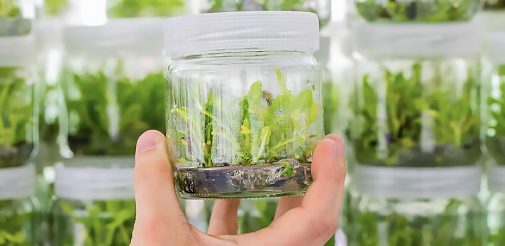
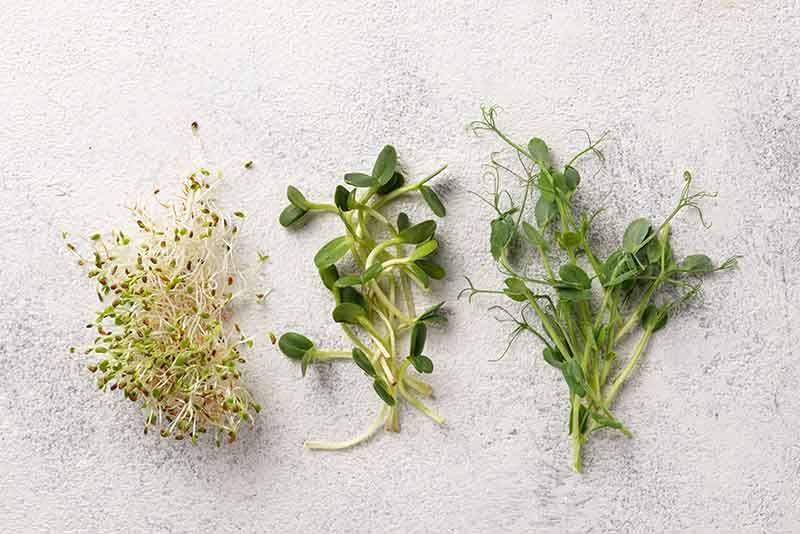

Sobre Nosotros
AgroNeek se dedica a la producción de semillas sintéticas a partir de material vegetal mejorado, ofreciendo soluciones agrícolas eficientes y sostenibles.
Nuestros Productos

Semillas Sintéticas
No sé cuál foto poner
Optimiza tus cultivos con nuestras semillas de alta calidad.

Plantas In Vitro
Plantas propagadas mediante biotecnología para un crecimiento óptimo.

Brotes Naturales
Brotes cultivados para mejorar el rendimiento agrícola.